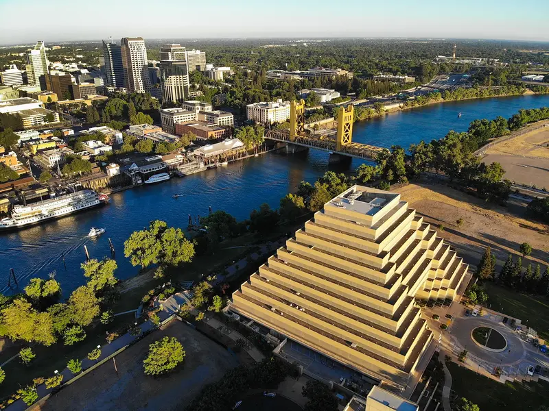

The California State Capitol is the seat of the California state government, located in Sacramento, the state capital of California.
The building houses the chambers of the California State Legislature, made up of the Assembly and the Senate,
along with the office of the governor of California.
Old Sacramento Waterfront is a unique 28-acre National Historic Landmark District and State Historic Park
that lives in homage to California's beginning with the Gold Rush of 1849. The district is located along the beautiful Sacramento River.
Sutter's Fort was a popular emigrant destination. The generous Sutter provided shelter and supplies to many weary settlers.
Others became skilled workers at the fort. Sutter and his employees helped rescue the Donner Party in 1847.
Established in 1839, the site of the fort was originally called New Helvetia by its builder John Sutter.
The Sacramento River is the principal river of Northern California in the United States and is the largest river in California.
Rising in the Klamath Mountains, the river flows south for 400 miles before reaching the Sacramento-San Joaquin River Delta and San Francisco Bay.
Events
This is a placeholder for the events info
Demographic
Population: 530,000
Median Household income: $79k
Page Visits
Number of Page Visits:
Sacramento State Capital building

Arial view of SacramentoSutters FortSacramento Kings StadiumOld Sacramento WaterfrontSacramento River